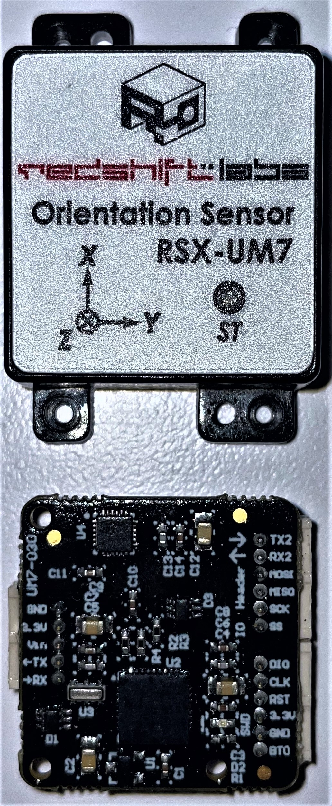
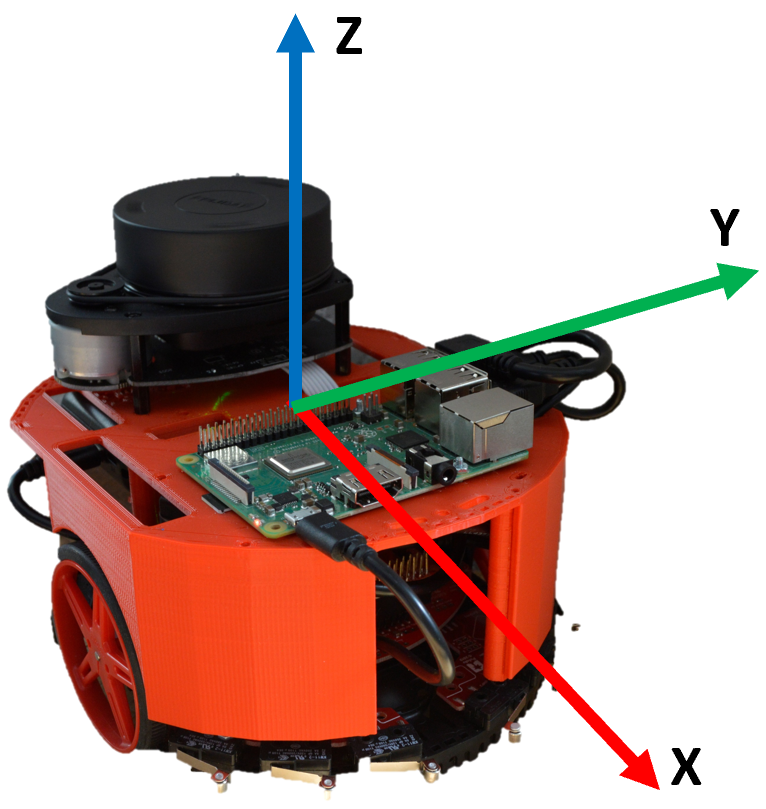

Inertial Measurement Unit
Contents
Inertial Measurement Unit¶
You must open this file as a Jupyter Notebook (link below) to run code
Run this file as an executable Jupyter Notebook
A note on this document¶
Now that you have a better understanding of the Linux operating system and Python programming language the Jupyter Notebooks will be used primarily to guide you through the In-Class Exercises and Laboratories. You will execute the majority of your commands and code within the Linux terminal.
Purpose¶
In practice, an inertial measurement unit (IMU) device provides orientation, angular velocity, and linear acceleration. The UM7 Orientation Sensor from Redshift Labs is an Attitude and Heading Reference System (AHRS) that contains a three-axis accelerometer, rate gyro, and magnetometer. Unlike a typical inertial measurement unit (IMU), which only provides raw sensor readings, the UM7 features an onboard microcontroller that combines sensor data using an EKF to generate orientation estimates 500 times a second.

The UM7 Orientation Sensor is connected to the Pololu USB AVR Programmer v2.1, a compact, low-cost in-system programmer (ISP). The programmer provides an interface for communicating with the UM7 Orientation Sensor.
The IMU provides values that are part of the robot state and allow the robot to navigate more accurately. Combined with data from the tachometers these values provide the odometry of the robot to estimate change in position over time. We will primarily use the IMU to perform 90 and 180 degree turns.

Calibrate the UM7 Orientation Sensor¶
As described above, there are a number of different sensors that work together to provide the attitude and heading estimates for the UM7 Orientation Sensor. These sensors are sensitive to magnetic fields which are unique to locale and device. As you will learn in future ECE classes, all electronic devices create small magnetic fields. Even electrons traveling over a wire create magnetic fields. The UM7 Orientation Sensor is strategically placed in the center of the robot for best attitude and heading performance, however, this location is also in the center of a number of magnetic fields. We can use Redshift Lab’s Serial Interface Software along with their calibration procedure to calibrate the UM7 to provide a more accurate attitude and heading reading.
Calibration Steps:¶
Plug the Pololu USB AVR Programmer v2.1 into your computer. You may want to move the USB cable so it is easier to rotate the robot when calibrating (when looking at the USB cables connected to the robot, the top left should be connected to the programmer).
Launch Redshift Labs serial interface software by double clicking the icon on your desktop or finding it in your browser.
Set COM Ports: You will need to configure which virtual COM port has been allocated to your USB serial converter PCB. Select “Serial Settings > Port > COMX” (where X is the allocated COM port number on your PC, in my case, it is the higher number). Select Connect and continue selecting ports until a value shows up under “Sensor Firmware Version”.
Read Data: Select “Configuration > Read”. A progress bar should load and once it is finished the configuration data should be displayed. Press the + button next to “Broadcast Rates – Raw Data” now select “All Raw Broadcast Rate”, verify that it is set to 20 Hz. If not, type 20 into the corresponding text box and press “Configuration > FLASH”.
Plot Data:
From the tabs select “Data”.
Click the + icon next to “Euler Angles”.
Tick Roll, Pitch, and Yaw checkboxes.
Press “Create Graph from Selected”.
A real time graph should be displayed in a separate window of Roll, Pitch, and Yaw. We suggest using your mouse to expand the window a little.
Start Magnetometer Calibration: To begin magnetometer calibration select “Mag Calibration > Start Data” you should notice that the “Collected Data Points:” begin counting up. While the software is taking samples, rotate your UM7-LT around in a spherical position capturing as many different samples of the surrounding magnetic field as possible. Keep well away from anything that will produce magnetic distortions in your sample set, i.e. ferrous metal or powerful magnets.
Stop Collecting Data: When you see that the “Collected Data Points:” number turn green, that’s an indication that you have collected the minimum samples required to perform a calibration. I usually collect about 500 samples. Now select “Mag Calibration > Stop Data”.
Compute Biases: You are now ready to compute the biases for calibration, select “Mag Calibration > Compute”. You should now see some computed data in the “Calibration Matrix”. Select “Mag Calibration > Write to RAM”.
Write Calibration Data: You will want your calibration data to persist, so now select “Configuration > FLASH”. This will write the calibration data into your UM7-LT, the calibration matrix will be stored even if the power is turned off and back on.
Zero Rate Gyros: This is needed in the later sets of firmware. It will initialize your new calibration correctly. Select “Commands > Zero Rate Gyros”.
Set Magnetic Reference Vector: Point your UM7-LT exactly North (North on the UM7 is left of front on the robot), now press “Commands > Set Mag Reference Vector”.
Reset EKF: You will now need to reset the EKF for the process to work correctly. You may notice that the graphs on your data plot are displaying incorrectly. Select “Commands > Reset EKF”. Now look at the data plot of Roll, Pitch and Yaw. If you point the X orientation of the sensor North and hold the unit as level as possible, you should see the Roll, Pitch and Yaw converge to zero.
Setup¶
The UM7 ROS package is pre-installed on your Master and Robot. But as always, trust, but verify. Open a new terminal on your Master and run the following:
rospack find um7
If installed, the command should return the absolute path to the package, similar to:
/home/pi/master_ws/src/um7
If the command instead returns an error, then you need to install the package. This package has not been compiled for ROS Noetic, so you must download the source code into the workspace source folder. When you install a ROS package from source, you have to manually download any dependencies (using rosdep) and then compile it.
cd ~/master_ws/src
git clone https://github.com/ros-drivers/um7.git
cd ~/master_ws
rosdep install --from-paths src --ignore-src -r -y
catkin_make
📝️ Note: It turns out the developers for the um7 ROS package did not adequately set up the dependencies. So you should have seen an error when running rosdep and catkin_make about a serial package not installed. To fix this dependency issue you need to install a ROS serial package to your source:
cd ~/master_ws/src
git clone https://github.com/wjwwood/serial.git
cd ~/master_ws
rosdep install --from-paths src --ignore-src -r -y
catkin_make
source ~/.bashrc
Create an ssh connection to your Robot and repeat the above.
Test the IMU¶
Open a new terminal on the master and run roscore and setup for statistics:
roscore
rosparam set enable_statistics true
Select the terminal with the secure shell connection to your Robot and display the serial ports connected to the Robot:
python3 -m serial.tools.list_ports -v
💡️ Tip: Write this command down as you will use it often to determine which devices are connected to your ports! Every time you reboot the Robot the ports might change.
Run the pre-built IMU publisher connecting to the Pololu USB AVR Programmer with the lowest port number (if that returns red text, try the next port number).
rosrun um7 um7_driver _port:=/dev/ttyACM1
⌨️ Syntax:
rosrun <package> <node> <_ParameterName:=ParameterInput>
Open a new terminal on your Master and observe what topics are running.
Echo the output of each of the topics and rotate the Robot to see the values change.
Which topic appears to be most useful for our application? What type of messages does that topic publish? You will need both of these pieces of information for the next portion of the ICE.
You can keep the node running for the next portion of the ICE.
Write the Subscriber¶
In a new terminal on the Master, create an ice6 package which depends on the geometry_msgs, rospy, and um7 packages, compile and source the ws:
cd ~/master_ws/src/ece495_master_spring2022-USERNAME/ catkin_create_pkg ice6 std_msgs rospy um7 cd ~/master_ws catkin_make source ~/.bashrc
Create an IMU node:
roscd ice6/src touch imu_sub.py
Copy and complete the below code using the GUI editor tool, Thonny. Browse to the subscriber you just created and double-click. This will open the file in Thonny (if it is open in any other editor, stop, raise your hand, and get help from an instructor)
💡️ Tip: Look for the “TODO” tag which indicates where you should insert your own code.
#!/usr/bin/env python3
import rospy, math
from um7.srv import *
# TODO: import message type sent by imu node
class IMU:
"""Class to read orientation data from UM7-LT"""
def __init__(self):
# reset the IMU
self.init_imu()
# TODO: subscribe to the imu topic that is published by the
# pre-built ROS imu node from the um7 package that provides
# roll, pitch, and yaw
# nicely handle shutdown (Ctrl+c)
self.ctrl_c = False
rospy.on_shutdown(self.shutdownhook)
# function to reset the gyro, filter, and magnetic reference
def init_imu(self):
rospy.wait_for_service('imu/reset')
try:
reset = rospy.ServiceProxy('imu/reset', Reset)
# (gyros, EKF, mag_ref)
reset(True, True, True)
print("IMU reset successful!")
except rospy.ServiceException as e:
print("service call failed: %s"%e)
# The IMU provides yaw from -180 to 180. This function
# converts the yaw (in degrees) to 0 to 360
def convert_yaw (self, yaw):
return 360 + yaw if yaw < 0 else yaw
# Print the current Yaw
def callback_imu(self, rpy):
if not self.ctrl_c:
# TODO: get the z component (yaw) of the message
yaw =
# convert yaw from radians to degrees and
# from -180 to 180 to 0 to 360
yaw = self.convert_yaw(math.degrees(yaw))
print("Current heading is %f degrees." % (yaw))
# clean shutdown
def shutdownhook(self):
print("Shutting down the IMU subscriber")
self.ctrl_c = True
if __name__ == '__main__':
rospy.init_node('imu_sub')
IMU()
rospy.spin()
Save, exit, and make the node executable.
Open a new terminal on the Master and run the imu_sub.py node.
Rotate the Robot and observe the output.
Checkpoint¶
Once complete, get checked off by an instructor showing the output of your imu_sub and rqt_graph node.
Summary¶
In this lesson you learned how to calibrate the IMU and get orientation data using the pre-built um7 ROS package. In the lab that corresponds to this lesson you will apply this knowledge to turn the robot in 90 and 180 degree turns.
Cleanup¶
In each terminal window, close the node by typing ctrl+c. Exit any SSH connections. Shutdown the notebook server by typing ctrl+c within the terminal you ran jupyter-notebook in. Select ‘y’.
Ensure roscore is terminated before moving on to the lab.
Lab 2: Inertial Measurement Unit¶
You must open this file as a Jupyter Notebook (link below) to run code
Run this file as an executable Jupyter Notebook
Purpose¶
This lab will integrate the UM7-LT Orientation Sensor with the USAFABot controller to turn the robot 90 degrees left or right.
Master¶
Setup:¶
In the /master_ws/src/ece495_master_spring2022-USERNAME/ folder, create a lab2 package which depends on std_msgs, rospy, geometry_msgs, um7, and usafabot.
controller.py¶
Copy the controller.py file from lab1 into the lab2 package.
Open the controller.py file from lab2 using the Thonny editor.
Import the math library, /imu/rpy message, and um7.srv services used in ICE6.
Add the following Class variables within the class above the
__init__()function:K_HDG = 0.1 # rotation controller constantHDG_TOL = 15 # heading tolerance +/- degreesMIN_ANG_Z = 0.5 # limit rad/s values sent to USAFABotMAX_ANG_Z = 1.5 # limit rad/s values sent to USAFABot
Add the following to the
__init__()function:A call to the
init_imu()functionInstance variable,
self.curr_yaw, initialized to 0 to store the current orientation of the robotInstance variable,
self.goal_yaw, initialized to 0 to store the goal orientation of the robotInstance variable,
self.turning, initialized toFalseto store if the robot is currently turningA subscriber to the IMU topic of interest with a callback to the callback_imu() function
Add the
init_imu()andconvert_yawfunctions from ICE6.Add the
callback_imu()function from ICE6, removing print statements and setting the instance variable,self.curr_yaw.Edit the
callback_controller()function so it turns the robot 90 degrees in the direction inputed by the user (left or right). Below is some pseudo-code to help you code the controller function
📝️ Note: Pseudo-code is not actual code and cannot be copied and expected to work! Make sure you comment out all the subscriber to the cmd_vel topic.
def callback_controller(self, event):
# local variables do not need the self
yaw_err = 0
ang_z = 0
# not turning, so get user input
if not turning:
read from user and set value to instance variable, self.des_yaw
input("Input l or r to turn 90 deg")
# check input and determine goal yaw
if input is equal to "l"
set goal yaw to curr yaw plus/minus 90
turning equals True
else if input is equal to "r"
set goal yaw to curr yaw plus/minus 90
turning equals True
else
print error and tell user valid inputs
# check bounds
if goal_yaw is less than 0 then add 360
else if goal_yaw is greater than 360 then subtract 360
# turn until goal is reached
elif turning:
yaw_err = self.goal_yaw - self.curr_yaw
# determine if robot should turn clockwise or counterclockwise
if yaw_err > 180:
yaw_err = yaw_err - 360
elif yaw_err < -180:
yaw_err = yaw_err + 360
# proportional controller that turns the robot until goal
# yaw is reached
ang_z = self.K_HDG * yaw_err
if ang_z < self.MIN: ang_z = self.MIN # need to add negative test as well!
elif ang_Z > self.MAX: ang_z = self.MAX # need to add negative test as well!
# check goal orientation
if abs(yaw_err) < self.HDG_TOL
turning equals False
ang_z = 0
# set USAFABOT_Cmd message and publish
self.cmd.lin_x = 0
self.cmd.ang_z = ang_z
publish message
Run your nodes¶
On the Master open a terminal and run roscore.
Open another terminal and enable statistics for rqt_graph.
Run the controller node.
Open secure shell into the Robot and run the usafabot_serial.py node.
Open another secure shell into the Robot and run the um7_driver node.
📝️ Note: You should now have four terminals (or tabs) open. On the master: roscore and controller.py. On the robot: um7_driver and usafabot_serial.py. I typically have one terminal window with all of the tabs for the mater and one terminal window with all of the tabs for the robot.
Type “l” or “r” to turn the robot 90 degrees.
Report¶
Complete a short 2-3 page report that utilizes the format and answers the questions within the report template. The report template and an example report can be found within the Team under Resources/Lab Template.
Turn-in Requirements¶
[25 points] Demonstration of keyboard control of USAFABot (preferably in person, but can be recorded and posted to Teams under the Lab1 channel).
[50 points] Report via Gradescope.
[25 points] Code: push your code to your repository. Also, include a screen shot of the controller.py file at the end of your report.